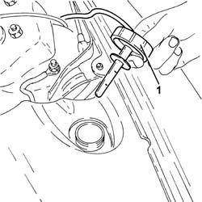
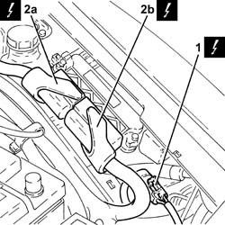
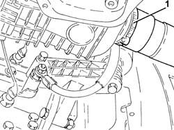
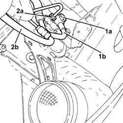
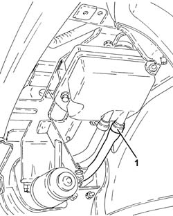
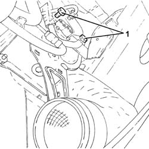
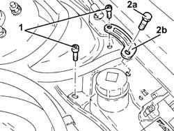
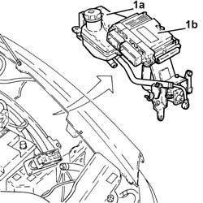
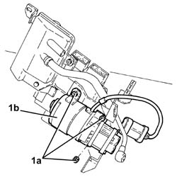
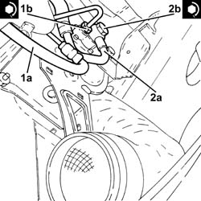

2127C30 HYDRAULIC SPEED SELECTION SYSTEM PUMP - R R
- Path
- Procedures > 21 GEARBOX UNIT > 2127 HYDRAULIC TRANSMISSION EXTERNAL LINKAGE > 2127C HYDRAULIC GEAR SELECTION SYSTEM > 2127C30 HYDRAULIC SPEED SELECTION SYSTEM PUMP - R R
- Kind
- repair procedure (removal / refitting; the operation number is the code)
- Applies to
- engines: 2.0 JTS; all production periods; only with equipment: Smart gearbox
- Interactive page
- https://sloeber94.github.io/elrnDB-aGt/en/#/125001284
Applies to: engines: 2.0 JTS; all production periods
 Removing
Removing
 Refitting
Refitting- Position the vehicle on a lift.
- Connect the Examiner diagnostic equipment.
- Select "Alfa Selespeed" on the Examiner.
- Select "Control unit test" on the Examiner and select "Marelli Selespeed automatic transmission" as the system.
- Press "Active diagnosis" on the Examiner and select "Accumulator depressurization".
- Follow the procedure indicated on the Examiner.
- Make sure that the ignition key is in the OFF position, then disconnect the battery terminal (-).
Description | Connector | |
|---|---|---|
- | Battery | See A001 Battery |
- Remove the gear selection electro-hydraulic system hydraulic circuit fluid reservoir plug.
- Drain the gear selection electro-hydraulic system hydraulic circuit fluid reservoir.

Applies to: engines: 2.0 JTS; all production periods
- Op. 4450B02 LEFT FRONT WHEEL R R
- Op. 7055B90 LEFT FRONT WHEEL ARCH LINER - R.R.
- Op. 7055B54 UNDER-ENGINE GUARD - R R
- Undo the bolts and remove the control unit protection.
1. Release the electrical connection for the gearbox electro-hydraulic selection system pump from the mounting and disconnect it.
Description | Connector | |
|---|---|---|
1 | Automatic transmission fluid pump | See N48 AUTOMATIC TRANSMISSION PUMP |
2. disconnect the electrical connections (2a) and (2b) from the engine management control unit.
Description | Connector | |
|---|---|---|
2a | Engine management control unit | See M10 ENGINE MANAGEMENT ECU |
Description | Connector | |
|---|---|---|
2b | Engine management control unit | See M10 ENGINE MANAGEMENT ECU |

Applies to: engines: 2.0 JTS; all production periods
- Loosen the band and disconnect the cold air intke from the air filter.

Applies to: engines: 2.0 JTS; all production periods
- Undo the connector (1a) and disconnect the pipe from the hydraulic circuit fluid reservoir to the gearbox electro-hydraulic selection pump (1b), pump side.
- Undo the connector (2a) and disconnect the pipe from the pump to the gearbox electro-hydraulic selection actuator hydraulic unit (2b), pump side.

Applies to: engines: 2.0 JTS; all production periods
- Loosen the band and disconnect the pipe from the electro-hydraulic selection activation hydraulic unit to the fluid reservoir, reservoir side.

Applies to: engines: 2.0 JTS; all production periods
- Undo the front bolts fixing the mounting for the hydraulic circuit fluid reservoir and the gearbox electro-hydraulic selection system pump.

Applies to: engines: 2.0 JTS; all production periods
- Undo the rear bolts fixing the mounting for the hydraulic circuit fluid reservoir and the gearbox electro-hydraulic selection system pump.
- Undo the nuts (2a) and remove the bracket (2b).

Applies to: engines: 2.0 JTS; all production periods
- Release the pipes from the bands on the mounting for the hydraulic circuit fluid reservoir and the gearbox electro-hydraulic selection system pump.
- Working via the wheel arch, remove the mounting for the hydraulic circuit fluid reservoir and the gearbox electro-hydraulic selection system pump (1a) complete with engine management control unit (1b).

Applies to: engines: 2.0 JTS; all production periods
- At the bench, undo the nuts (1a) and remove the gearbox electro-hydraulic selection system pump (1b) from the mounting.

Applies to: engines: 2.0 JTS; all production periods
Refitting
Removing- Place the gearbox electro-hydraulic selection system pump on the mounting and secure it using the nuts.
- Place the mounting for the hydraulic circuit fluid reservoir and the gearbox electro-hydraulic selection system pump, complete with engine management control unit, in its housing.
- Fasten the pipes to the bands on the mounting for the hydraulic circuit fluid reservoir and the gearbox electro-hydraulic selection system pump.
- Refit the bracket and secure with the bolt.
- Tighten the rear bolts fixing the mounting for the hydraulic circuit fluid reservoir and the gearbox electro-hydraulic selection system pump.
- Tighten the front bolts fixing the mounting for the hydraulic circuit fluid reservoir and the gearbox electro-hydraulic selection system pump.
- Connect the pipe from the electro-hydraulic selection activation hydraulic unit to the fluid reservoir, reservoir side and tighten the band.
1. Connect the pipe from the electro-hydraulic selection gearbox hydraulic actuation unit (1a), pump side and tighten the connector to the recommended torque.
Fastening | Component | Ø | Value (daNm) | |
|---|---|---|---|---|
1b | Connector | PIPE FROM PUMP/ACTUATOR UNIT | M12 | (Pump side) 1.2 - 1.5, daNm |
2. Connect the pipe from the hydraulic circuit fluid reservoir to the gearbox electro-hydraulic selection pump (2a), pump side and tighten the connector (2b) to the recommended torque.
Fastening | Component | Ø | Value (daNm) | |
|---|---|---|---|---|
2b | Connector | PIPE FROM RESERVOIR TO PUMP | M14 | (Pump side) 0.8 - 1.3, daNm |

Applies to: engines: 2.0 JTS; all production periods
- Connect the cold air intake to the air filter and tighten the band.
- Connect the electrical connections to the engine management control unit.
- Connect the electrical connection for the gearbox electro-hydraulic selection system pump and secure it to the mounting.
- Place the rear control unit guard in its housing and secure it using the bolts.
- Op. 7055B54 UNDER-ENGINE GUARD - R R
- Op. 7055B90 LEFT FRONT WHEEL ARCH LINER - R.R.
- Op. 4450B02 LEFT FRONT WHEEL R R
- Connect the negative battery terminal (-).
- Op. 0010T47 HYDRAULIC SYSTEM FLUID FOR GEARBOX WITH HYDRAULIC SELECTION CHECK LEVEL AND TOP UP IF NECESSARY
- Op. 0010T48 HYDRAULIC SYSTEM FOR GEARBOX WITH HYDRAULIC SELECTION BLEED AIR
- Remove the vehicle from the lift.